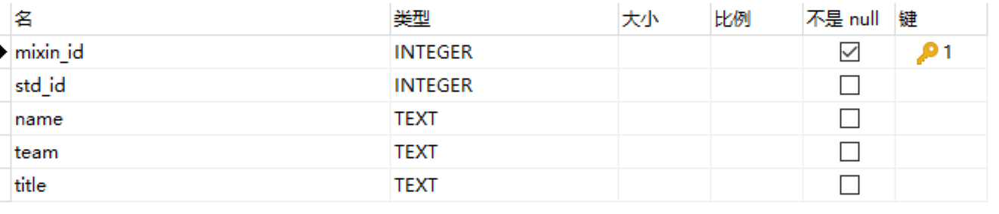
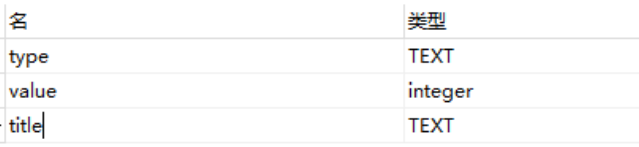
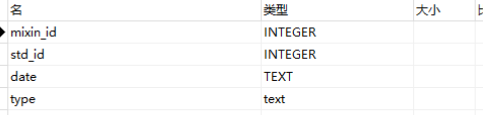
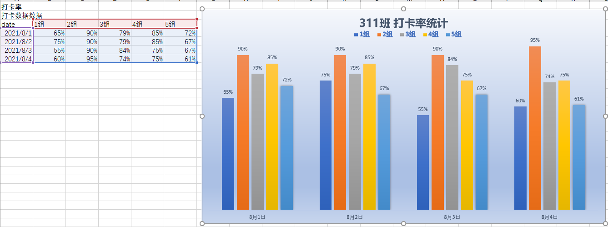

最近参加了一个训练营，作为副教练，承担起训练营的运营工作。事不大，活不少，打卡记录、活动积分、奖励制度、评优方案、趋势对比，应有尽有……
开始认为 Excel 就足够应付，没想到第一项工作 —— 人员汇总，就把我难倒了，于是果断拎起 Python 这把大刀，披荆斩棘，利用业余时间，不到一周竟然打造出了一套运营管理系统，到底是如何做的呢？一起来看。
基础整理
数据是运营的基础，人员数据是基础数据，首先需要搞定人员信息。
训练营里的人员信息来自多个渠道，有通过 APP 报名的，有调查问卷收集的，还有人工录取的。
加上同一个可能在不太的地方用不一样的名字，以及不同渠道收集的数据完整性不同，所以整理基数数据工作耗费了将近两天时间。
最初用 Excel 的 VLookup 做数据合并，但灵活度小，限制大，放弃了。
最后使用 Python 处理各个渠道的数据，再录入了数据库，完成了数据整理工作。
这里重点说一下数据库。
使用数据库的好处是，方便数据整合、统计和更新。但是数据库一般比较重，维护部署都是问题，于是选用了文本数据库 SQLite 作为数据库。
SQLite 很轻，不需要服务器，但功能于 MySQL 类似。
使用起来安装 Python 的 SQLite 模块就可以了：
1 | pip install sqlite3 |
创建数据库链接：
1 | import sqlite3 |
其中 database.db 就是一个普通文件，如果没有，会自动创建一个。
有了链接，就可以执行数据库操作了，比如创建一个库表,插入数据：
1 | # 创建一个游标 |
因为需要频繁地操作数据库，所以将这些操作写成一个类：
1 | class DBSqlite: |
- 封装了基本操作，
de为执行一个数据库操作，insert为插入数据，query执行一个查询 - 需要注意的时
_get_conn中的self._conn.row_factory = sqlite3.Row语句，作用时执行查询后，返回的结果会被转化为sqlite.Row对象，以便通过字段名来读取值，详细参加 row_factory。
处理好基数数据，也有了数据库工具，就可以开始构建系统了。
结构设计
系统再小，也需要先从结构设计入手。
这个系统只是单机版（实际上可以做 Web 扩展，下篇展开），所以省去了网络和 API 设计，直接从库表设计开始。
首先分析业务。
训练营的运营数据包括，打卡数据，开单数据，组长日常工作，以及成员积分（通过积分规则，再自动核算部分展开）。
另外，成员有职务之分：普通成员 和 组长。规则是：组长可以作为普通成员，普通成员不能做为组长。
那么人员库表中，加入了职务，和组别，以便区分人员角色：

- mixin_id 是用户注册App的id
- std_id 为打卡系统的id
- team 为小组名
- title 为职务
然后设置一个活动类型表，并指定活动与职务的关系：

- type 为活动类型
- value 为活动积分
- tilte 为该活动对于的职务
接下来就是活动记录表了，由于已经定义了活动与职务的对于关系，所以，活动记录表中，只需记录活动类型即可：

- mixin_id 为用户id，std_id 其实是没必要的，不过录入打卡记录时顺带记录了
- date 为活动发生的日期
- type 为活动内容
如果同一个人同一天同一个活动出现多次，就会有重复记录，那么如何区分是否真的重复呢？在 数据收集 中展开。
除了基本的数据结构，还由积分统计明细和积分合计表，这里不再赘述，会在核算部分提及。
数据收集
现在数据框架有了，数据从何而来呢？
这个训练营的数据主要来自两个地方，第一是打卡数据，第二是日常记录数据。
打卡数据由鲸打卡提供，可以在浏览器中查看，并且提供了导出打卡 Excel 的功能。
不过操作比较麻烦： 首先登录后台（用微信扫码登录），再先选择导出条件（一般为时间区间），下载Excel，然后打开 Excel，才能复制其中的打卡信息，存入文本文件，最后才能执行脚本处理。
好问题：
为什么不直接处理 Excel 呢？
- 因为Excel 处理需要安装额外库，也没有文本文件处理方便。
- 另外未来考虑做成 Web 系统，所以没有做 Excel 的进一步扩展。
不选择导出，就得用程序请鲸鱼打卡上抓取了。
所以就研究了下打开管理后台的请求，分析了一下，请求中有个 cookie 值是关键，于是，复制请求，转化为 Python 代码，详细描述见 自动预约程序
收集到的数据是 JSON 格式的，将其转化为 List，插入数据库：
1 | def record_check(rows): |
record_check方法是用来记录打开记录的，参数rows是从打开后台抓取的数据get_user是可以根据打卡用户的 id，从用户表中找到用户记录，然后结合打卡记录，补全打卡记录db是 上面提到的 DBSqlite 得一个实例，调用其insert方法将数据插入数据库
日常记录，需要根据训练营中的实际情况做记录，比如成员开单，组长轮值等，记录在 Excel 中比较方便。每日统计一次，所以我直接将数据复制处理，也存放到文本文件中，用程序解析成记录行，插入库表，展示一下解析方法：
1 | def merge_activity(datafilename): |
可以看到，通过读入文本行，再拆分成对于字段，合成活动记录。
这样两个数据收集工作就做好了，这里还需要解决一个问题 —— 避免数据重复。
容易想到的方法是，为数据设置联合主键，然后对数据做增量式更新。
但是这样做需要做更多的工作，而且还要很好的测试。
从业务上分析可知：活动数据并不多，学员个数不过一百。
那么不妨每次重算！？
即每次执行时，先库表数据删除，然后重新插入一遍。
虽然效率了不高，也算是用框架换时间吧，换的不出机器时间，而是我的工作时间哈哈。
自动核算
数据统计收集完毕，就需要根据活动积分，计算每个人的积分明细合计。
既然我们选用了数据库，就直接用 Sql 语句搞定吧。
相对程序处理来说，Sql 更容易做统计类的事情。
统计普通成员积分明细的语句如下：
1 | INSERT INTO tprj_user_score_detail |
- 查询所有职务属于
成员的活动积分，插入成员积分明细表 tprj_activity为活动记录表，与tprj_user用户表链接，然后再链接上活动表tbas_score，作用是对活动类做约束where条件中，限制活动类型必须为成员活动sum(s.value)为一个成员的当日积分合计，日期体现在group by的条件中了
类似的需要写很多统计语句，比如组长的，小组的，以及各自的积分合计，不再逐个展示了。
由于 sql 语句较多，为了便于管理，将 sql 语句整理到 sql.py 文件中，在导入主程序代码，最后调用 DBSqlite 工具方法执行，例如：
1 | import sql |
是不优雅多了？
打卡率是通过统计活动记录计算的：
1 | def cal_check_rate(): |
team_member_count语句语句获取各组的人数，因为可能有人没有注册打卡。只通过打卡记录获取组内人数，不严谨。team_check_count语句是按组和日期分类核算出的组打卡数- 打卡率公式为：
（打卡个数/组内人数） * 100% - 将计算好的打卡率，按日期存入
dbrows，最后插入数据库
这里还需要注意的是重复数据问题，处理方法简单粗暴：
全部清除重算
其他数据处理也类似。
报表导出
数据处理做好了，要让发挥数据的作用，就需要制作成报表，才能让其他人利用。
本着一切从简的原则（主要是需要尽快提供结果），选择也 Excel 成现统计结果。
要输出哪些内容呢？
打卡率、成员积分、组排名等，是需要的。
对于打卡率，需要按组分类，这样就有读出小组成员的作用，如何抽取数据呢？
写个 Sql 就好了, 获取打卡率的语句 check_rate_show 如下：
1 | SELECT |
tprj_team_check_rate是用于按组和日期存放打卡率select语句中，使用了行转列的技巧，使得结果为 第一列为日期，后面列为各个组，这样是为了绘制成图表方便
其实结果可以导入 Excel ，生成报表，更方便一些，但是我没这样做，因为：
- 操作 Excel 比较费劲，调试工作量大
- 我有更大的打算，即最终实现为在线版的，所以花费大量时间不值得
因此我直接将数据输出到文本文件里了。
例如对打卡率的输出是这样的：
1 | def show_check_rate(): |
check_rate_show执行 Sql 获得数据- 从数据中获取表头信息，做成一行记录，请注意字段的分隔为 tab 符，这样时为了方便直接粘贴到 Excel 中
- 取出数据中的每一行，做成表体数据行
- 最后再加入一个回车，这是为了和其他的输出分隔开
方法执行的结果，写入文本文件：
1 |
|
filename为要写入的文本文件，这里利用当前时间作为文件名，是为了不重复- 打开文件，用
writelines方法将返回的行写入文件中 - 这里还可以调用其他产生输出方法，将结果写入文件
最后，文件中数据如下：
1 | date 1组 2组 3组 4组 5组 |
复制到 Excel 的图表数据中就会形成打卡率图表：

日常维护
运营工作不是一成不变的，比如为了激励成员对提出的问题进行整理，新增了一个积分点叫 解答整理。
就得调整积分项，因为之前已经将积分项用库表存储了，现在只需要增加一条记录，并指明该积分适用于成员角色就可以了。
另外，在 活动详情 报表中，需要按活动名称记录每个人的数据，也是个行转列的操作，但麻烦的是活动项是会变的。
于是先将获取项动态获取到，然后合成为行转列的语句，再和查询语句合并为完整的 Sql 语句，这样活动再有调整时，值管添加数据项就好了，代码如下：
1 | score_type_temp = "max(case when type ='{atype}' then num else 0 end) as '{atype}'" |
最后，将各部分的代码集成起来，放在一个 main 函数中，每天执行一次，将输出的文本文件中的数据复制到 Excel 中，就完成当日报表了，整个操作耗时不到十分钟，还算满意。
总结
促使我这么做的是，不想在机械的事情上耗费时间，所以会尽可能得将能自动处理的，让程序处理。
虽然让一切程序化是一个理想，在实现的道路上会有很多阻碍，所以还需要找到落地的平衡点，需要接受不完美，需要已实用为导向 —— 先实现，再完美。
下期，在实现基本功能的基础上，我们聊聊如何将这个平台 Web 化。
比心！